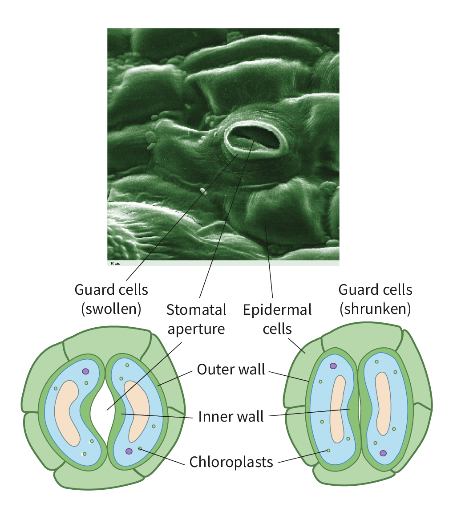

Stomata and its function
Stomatas are located on the lower epidemis of leaves.
Function 1: prevent water loss.
Function 2: allow diffusion in and out of the leaves
Control of Stomata's opening and closing
Two Guard cells are in charge of the opening and closing.

Stomata OPEN
During the day, when light is used to do photosythesis.
Low CO2, for more CO2 to diffuse in the plants.
During drought, prevent more water loss.
Stomata CLOSE
During the night, there is no light for photosythesis, converse water.
High Temperature, prevent water loss.
High Humidity, prevent water loss.